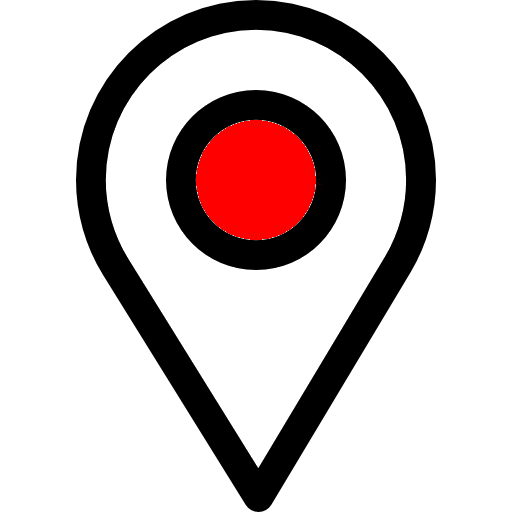
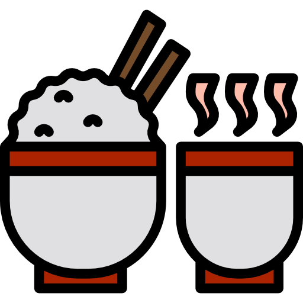
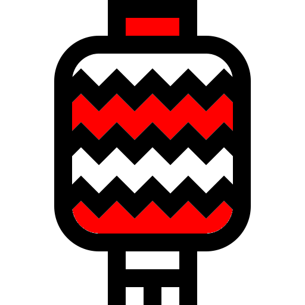
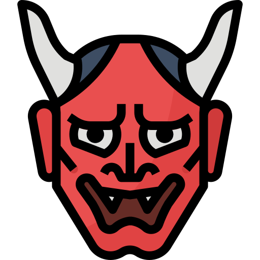

Le Japon (en japonais : 日本) est un pays asiatique
au large de la Russie et de la Corée
dont la capitale est Tokyo,
L'archipel japonais couvre 370 000 km².
Le Japon est aussi appelé « pays du soleil levant »,
parce qu'il se trouve sur un archipel
situé juste à l'est du centre géographique de l'Asie.
japon ?

en 2 mots
le Japon est la 3ème puissance économique par son PIB.
Les japonais sont d'excellents touristes
et le Japon attire aussi les touristes du monde entier.
En 2019, le Japon accueille le G20, la coupe du monde de rugby
et le championnat du monde de handball féminin.
En 2020, les Jeux Olympiques d'été
se déroulent à Tokyo du 24 juillet au 4 août.


Les villes


Tokyo
Tokyo est la capitale du Japon et
la métropole la plus peuplée du monde.
Entre ses temples traditionnels majestueux et
les néons brillants de Shibuya,
c’est l’une des villes
les plus captivantes de la planète.
Tokyo a quelque chose à offrir
à tous et est un endroit à visiter
au moins une fois dans sa vie.
Planifiez votre séjour à Tokyo
à la perfection en lisant ce guides de voyage.
Kyoto
Kyoto, souvent considérée comme
la plus belle ville du Japon,
était la capitale japonaise jusqu’à
ce que le gouvernement déménage à Tokyo en 1868.
Cependant, avec ses plus de
1000 temples bouddhistes,
la
ville est restée le centre religieux du Japon.
Kyoto abrite également certains des
monuments les plus emblématiques du Japon,
des jardins, temples et œuvres d’art
plus exquis et sublimes que tout.
Osaka
Osaka est la troisième ville la plus
peuplée du Japon et était la première capitale du pays.
Elle est toujours considérée comme un
centre économique vital au Japon.
Elle abrite le plus grand
port maritime du
Japon et de nombreuses
industries japonaises de pointe.
Osaka est également considérée comme
un paradis culinaire :
son surnom "Tenka no Daidokoro"
signifie la cuisine de la nation.
Que FAIRE ?


Tokyo
- mont Fuji
- parc national de Hakone
- porte Kaminarimon

Kyoto
- quartier Gion et ses geishas
- sanctuares incontournables de Kyoto
- Goûter aux spécialités du marché Nishiki

Osaka
- château d'Osaka
- Umeda Sky Building
- Visite Universal Studio JAPAN
La PITANCE

Kyoto
- tsukemono (cornichons japonais)
- Kyo-yasai (légumes de Kyoto)
- l'Unagi (spécialité millénaire à base d'anguille)
Osaka
- Okonomiyaki (en quelques sortes une omelette locale)
- Takoyaki (boulettes de pâte)
- Kitsune Udon (soupe).

LE GîTE



CONTACT
